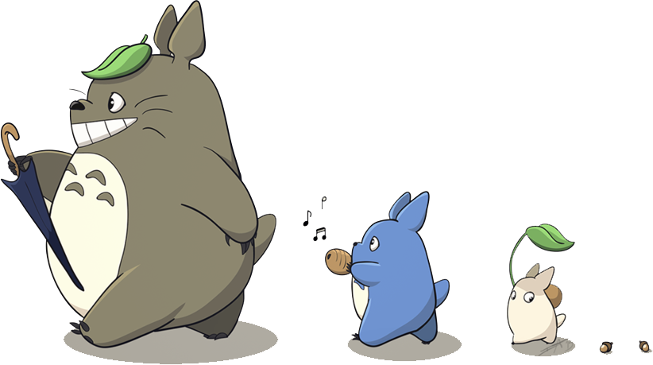
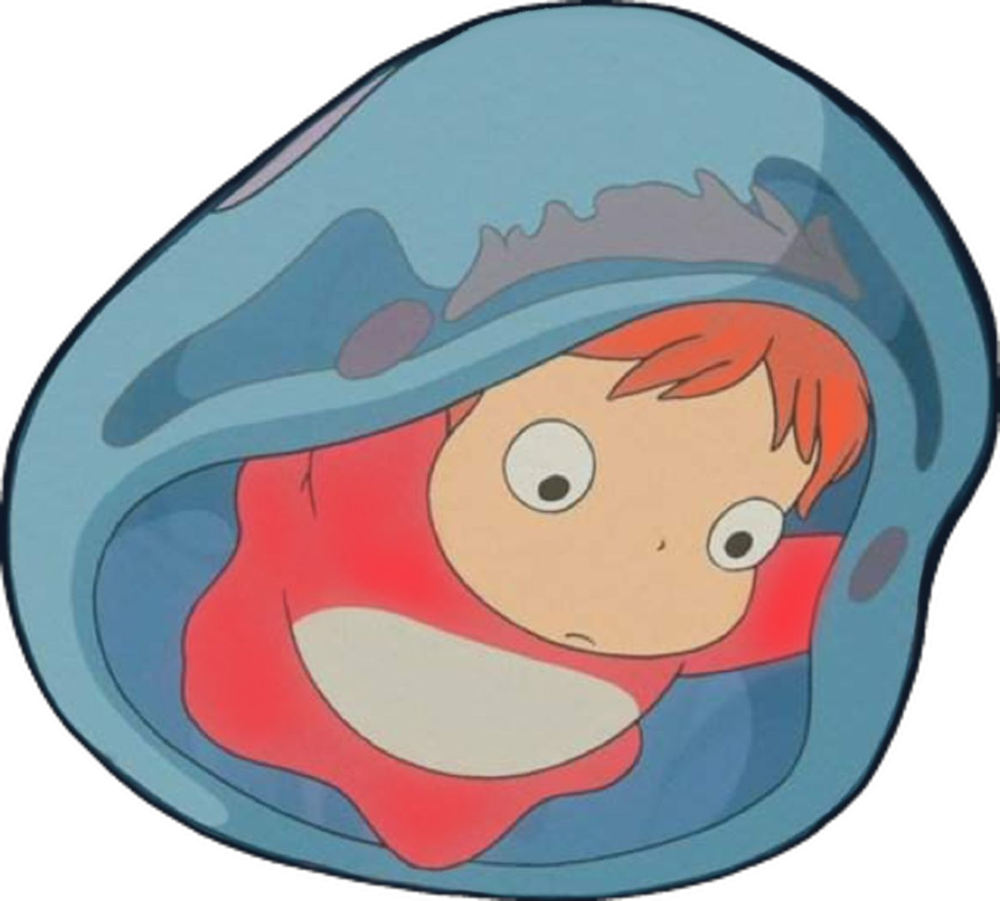
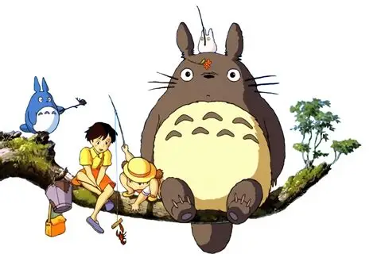
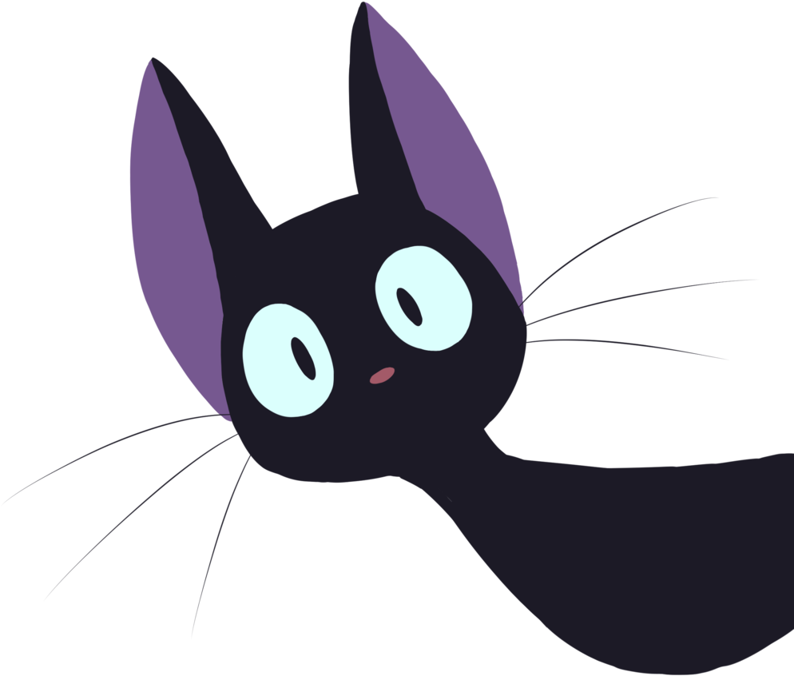

💡 文章をクリックすると音声が再生されます
What does happiness mean to you? Is it money? Certainly, a few extra zeroes on the old account balance never hurt anyone. That being said, does happiness necessarily follow from material prosperity? I think not. After all, money alone can't buy love or friendship, and we've yet to find a way to buy or sell time. Indeed, the standard of what can be considered "happiness" changes considerably from person to person. So, what is happiness? It's the encounters with other people, the sad times and the happy times, the trials and the triumphs... When I think of all of these, I know what happiness is to me.
I have a mother, a father, and several older and younger siblings. We enjoy every day together, and I'm glad that our family worked out the way that it did. However, even I have at times had frustrations with my family. For instance, the car. It's an older model, and I was never very fond of it. Compared to my friends' parents' cars, it seemed like a bit of a clunker. "Are we really so poorly off as this," I thought to myself. Thinking back on it now, of course, it was a self-centered and immature way of looking at things, and I've come to regret it That's because one day, I happened to overhear my parents having a conversation. My mother remarked, "The last car payment's coming up soon, thank the Lord. To think that we'll finally be able to drive wherever we please in our own vehicle... No accidents, now, you hear?" She then let out of long sigh. "It's tough, with the kids. But all this money we've saved, we'll be able to put it to good use sending them off to college. The house and the car have suffered a bit for it, but it'll all be worth it to see them pursue their dreams." Hearing this, I teared up. Guilt and gratitude clashed within me as I realized how fortunate I really am.
As for my father, he's an intelligent person. However, in his youth he had to work in the family business, and so he never went to high school. He often tells us, "Don't let the future worry you too much."" I still regret some of my choices in life, so I want you guys to pursue whatever it is you're passionate about." My dad's helped me learn to find joy in the little things in life. In so doing, I've realized that there's happiness to be found all around, and in so doing the good fortune of others has become my own.
The world can be a sad and painful place. Yet, whever I find myself in the midst of hard times, I have but to remember all the people in my life who've helped to bring me to this point: my family, my teachers, and my friends. So, I ask myself: "Who is the happiest person alive?"

